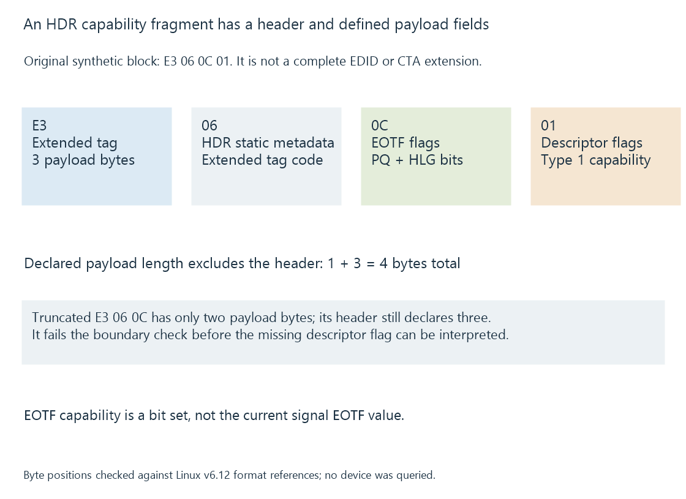

CTA-861 capability blocks
CTA-861 capability structures extend display declarations with defined video, audio, color and metadata information used by consumer digital-interface routes.
An EDID base block cannot express every useful consumer display feature on its own. CTA-861 defines additional timing and signaling relationships, including structures that can appear in a CTA extension of the display declaration.
These structures can describe video, audio and relevant color/metadata capabilities. Each block has a defined meaning; treating the whole extension as a single “HDR supported” switch loses information.
Data blocks have boundaries
A CTA extension identifies its structure and provides a region for data blocks, alongside other defined information.
A data-block header encodes a tag and a payload length. An extended-tag block uses a further byte to identify its particular kind.
A parser must respect those lengths before interpreting bytes. A flag read from the wrong offset can give an apparently plausible but unrelated capability.

The referenced Linux parser checks the HDR static metadata block’s extended tag and minimum payload length. It then reads the EOTF and static-metadata descriptor flags at their defined positions.
A small original HDR capability fragment
Consider this synthetic four-byte data block:
E3 06 0C 01
| Byte | Meaning in this fragment |
|---|---|
| E3 | Extended-tag block with three payload bytes |
| 06 | HDR static metadata extended tag |
| 0C | EOTF capability bits: PQ and HLG in this exercise |
| 01 | Static metadata descriptor Type 1 capability |
The fragment is an original teaching input. It is not a complete CTA extension, complete EDID or captured device capability.
The EOTF field is a bit set: more than one supported interpretation can be declared. It is not the numeric value of the currently active signal’s EOTF.
Likewise, the Type 1 capability bit is not a list of that movie’s mastering luminances. Additional optional fields and other blocks have their own definitions.
CTA’s HDR static metadata extension standard supplies the specification reference; the public parser provides a concrete implementation reference for the displayed byte relationships.
A truncated fragment must stop the interpretation
Remove the final byte from the teaching fragment:
E3 06 0C
E3 still declares three payload bytes, but only two follow it. The parser cannot obtain the missing Type 1 capability field from this fragment.
Reading the first byte of a following block as though it completed this one would merge unrelated structures. The original four-byte fragment fits its stated boundary; the three-byte fragment fails that boundary check.
The length check precedes interpretation of the flags. This is why a useful capability parser validates structure as well as recognizing a familiar tag.
Related declarations answer different questions
Video timing information describes accepted presentation timings. Audio descriptors can specify format/channel/rate properties. Colorimetry, chroma-format and metadata structures add other constraints.
A supported audio codec name does not establish every channel count or sample rate. A supported video timing does not imply every color precision or chroma arrangement at that timing.
The selected HDMI/DisplayPort transport also has to carry the required combination. The source cannot safely manufacture a universal mode by collecting unrelated positive flags from several blocks.
Capability is not current output
A TV can declare that it accepts PQ while a client currently sends an SDR presentation. It can also accept a format that the source or an intermediate device cannot produce on the chosen route.
For Emby playback, source-file color tags, path-visible CTA declarations and the active display signal remain separate observations.
EDID explains where the declaration is read. HDMI HDR signaling explains how the source describes the output it actually sends.
See Also
- EDID: display capability declarations
- HDMI HDR signaling
- HDMI video transport
- HDMI Enhanced Audio Return Channel (eARC)